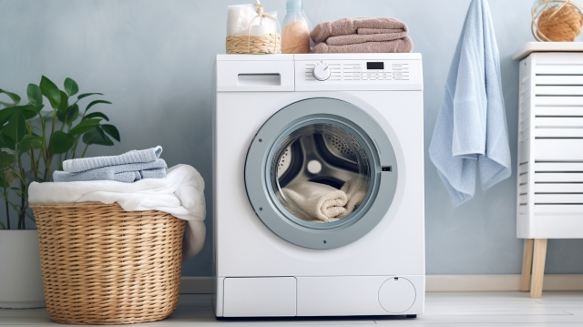
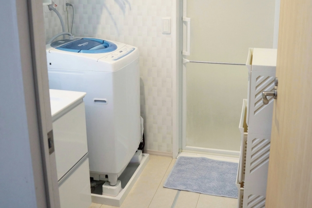
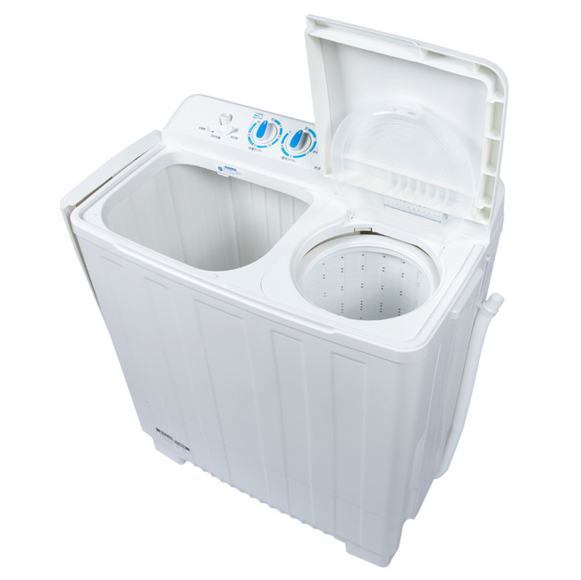
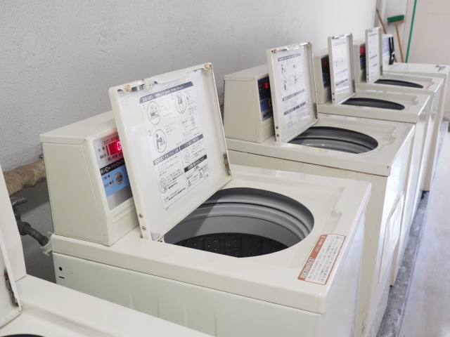

【2023年版】洗濯機で何を買えばいいのかわからない人は必見!!

公開日 2023/08/08
夏になるとみんな汗かきますし、ムシムシとした暑さが続くので汗の匂いなどもあるしお布団とかも汗まみれになって何回も洗濯回しちゃいますよね。
なので1年を通して夏は人が最も洗濯機を回す季節なんです!
しかしそう簡単に買えるものでもないし買い換えるものでもないですよね。
なので今回はどんな洗濯機が自分に合っているのかをわかるように洗濯機の種類や詳しいことを説明するのでゆっくり見ていってください！
もくじ
1.洗濯機の種類や特徴について
まず洗濯機の種類ですが、洗濯機には主に以下の4種類があります。
・ドラム式洗濯機
・縦型洗濯機（トップロード洗濯機）
・二槽式洗濯機
・洗濯乾燥機
それぞれの特徴ですがを今から紹介していきます！
ドラム式洗濯機は、
洗濯の品質と効率：ドラム式洗濯機は、洗濯物洗濯物をより効率的かつ効果的に洗うことができます。
回転するドラムによって洗濯物が均等に運ばれ、衣類と水のより良い接触が可能となります。
これにより、よりクリーンな洗濯結果を得ることができます。
衣類のやさしい取り扱い: ドラム洗濯機は、洗濯物をよりやさしく取り扱うことができます。
通常、ドラムは洗濯物を引っかけることなく優しく洗うため、衣類の摩擦や引っかかりによる損傷を最小限に抑えることができます。
これにより、衣類の寿命を延ばすことができます。
多機能性: ドラム洗濯機には、さまざまな洗濯プログラムやオプションがあります。
例えば、デリケートな衣類用の洗濯プログラムや、エネルギー効率の高い洗濯プログラムなどがあります。
また、一部のドラム洗濯機には、洗濯と乾燥を一台で行うことができる組み込みの乾燥機能も備わっています。
水とエネルギーの節約: ドラム洗濯機は、従来の洗濯機よりも水とエネルギーを節約することができます。
均等に洗濯物を運ぶドラムと、効率的な洗濯サイクルにより、水の使用量と洗濯時間を最小限に抑えることができます。
また、一部のモデルはエネルギー効率の高いモーターや省エネルギーの機能を備えているため、電力消費も削減できます。
・縦型洗濯機（トップロード洗濯機）
コンパクトなサイズ: 縦型洗濯機は、一般的にドラム洗濯機よりもコンパクトなサイズです。
そのため、限られたスペースや狭い場所に設置するのに適しています。小規模な住宅やアパートメント、狭い洗濯室などで特に便利です。
空間へのアクセスのしやすさ: 縦型洗濯機は、上部から洗濯物を投入するため、洗濯サイクル中に洗濯物を追加することが比較的簡単です。
ドアを開けるだけで済むため、洗濯サイクルが始まってからでも、必要な洗濯物を追加することができます。
経済的な価格: 縦型洗濯機は、一般的にドラム洗濯機よりも経済的な価格帯に位置しています。予算を抑えつつ、洗濯機を購入したい場合に選択肢として考えられます。
メンテナンスのしやすさ: 縦型洗濯機は、ドラム洗濯機に比べてメンテナンスが比較的簡単です。
内部の部品やフィルターにアクセスしやすく、掃除や定期的なメンテナンス作業が容易です。
操作のしやすさ: 縦型洗濯機は、操作パネルやコントロールが上部にあり、立ったまま操作できる場合があります。
背の高い人や腰痛のある人にとって、しゃがまずに操作できるのは利点です。
・二槽式洗濯機
機能の分離: 二槽式洗濯機には洗濯と脱水の2つの槽があります。この分離された構造により、洗濯と脱水を同時に行う必要がありません。
洗濯が完了したら、衣類を別の槽に移動して脱水を行うことができます。このため、脱水中に新しい洗濯を始めることができ、時間を節約することができます。
洗濯物の柔軟性: 二槽式洗濯機を使用することで、異なる種類の洗濯物を同時に処理することができます。
例えば、衣類とタオルを同時に洗濯したい場合でも、2つの槽を使って別々に処理することができます。
これにより、異なる洗濯物の特性に合わせた最適な洗濯プログラムを選択することができます。
高い効率性: 二槽式洗濯機は、水とエネルギーの使用を最適化することができます。
洗濯と脱水を分けて行うことで、水の使用量を最小限に抑えることができます。また、脱水機能は洗濯機の回転速度を高く設定するため、衣類の余分な水分を除去するのに効果的です。
これにより、衣類の乾燥時間が短縮され、エネルギーを節約することができます
使いやすさ: 二槽式洗濯機は通常、簡単な操作パネルを備えています。洗濯と脱水の機能を独立して制御することができ、必要なプログラムや設定を選択することができます。
また、衣類の移動や取り出しも比較的容易であり、使い勝手が良いと言えます。
・洗濯乾燥機
時間の節約: 洗濯乾燥機は、洗濯と乾燥を同じ機械で行うことができます。通常の洗濯機と比較して、洗濯物を別の機械に移す必要がないため、時間を節約することができます。
また、洗濯サイクルと乾燥サイクルを同時に実行できるため、乾燥にかかる時間も短縮されます。
スペースの節約: 洗濯乾燥機は、洗濯と乾燥の2つの機能を1つの機械で実現するため、スペースを節約することができます。
独立した洗濯機と乾燥機を購入する必要がなくなるため、小さな住宅やアパートなどの限られたスペースで特に便利です。
便利なオプション: 洗濯乾燥機には、さまざまな便利なオプションが備わっています。
例えば、洗濯物の種類や汚れの度合いに応じて適切なプログラムを選択することができます。また、乾燥の時間や温度を調節することも可能です。
これにより、衣類や他の洗濯物を効率的かつ適切に処理することができます。
衣類のケア: 洗濯乾燥機には、衣類のケアに役立つ機能があります。例えば、衣類を優しく取り扱うための特殊なドラムやセンサーが組み込まれている場合があります。
これにより、衣類が痛まないように配慮されています。また、温度や乾燥時間を調整することで、特定の衣類や素材に適した処理を行うこともできます。
2.続いて適切なサイズと頻度について 洗濯機は何人住んでいるのか、どのくらいの頻度でどのサイズを買えばいいのかが大体決まります。
どのサイズを買うにも大前提の知識を皆さんにお伝えします それは
洗濯1人1日約1.5キロ＋αの余裕ということです！ これを前提としながら考えると 1～2人暮しの場合、容量が6～7キロあれば足りると思います。
雨が続いた日、泊まりがけの出張や旅行から帰ってきた日などの洗濯を考えると、余裕をみて、7 kg以上の洗濯機もおすすめです。 こんな人におすすめ ・1～2人暮らしで、少なめの量を毎日洗いたい ・1～2人暮らしで、2～3日に1回洗いたい3人以上～は、容量が約8キロあるといいでしょう。
もちろん3人以上～は大雑把すぎるのでそこはさっき言った前提をもとに考えてみて欲しいです。3人以上となると家族で使用するということが大抵だと思うので、子どもの服などたっぷりの洗濯物が出るから、 洗濯は毎日するご家庭なら、余裕をみて容量8 kg以上の洗濯機がおすすめです。雨が続いたとき、家族旅行から帰ってきたときなども、まとめて洗うことができます。こんな人におすすめ ・1～2人暮らしで、週末にまとめ洗いしたい ・3人以上の暮らしで、毎日洗いたい ・3人以上の暮らしで、2～3日に1回まとめ洗いがしたい ・シーツなどもまとめて一気に洗いたい
3人以上でさらに一気に洗濯を終わらせたいという人には容量10キロ以上、もしくは、容量12キロがいいでしょう。
容量12 kgを使えば、週末のまとめ洗いも一気に終わり、洗濯の時短になります。縦型12 kgタイプ:洗濯機のサイズも10 kgタイプと大きな差はないので一度検討してみてはいかがでしょうか。
ドラム式12 kgタイプ:本体寸法をほぼ変えずに大容量12 ㎏を実現。12 kgタイプでも一般的な防水フロアーに設置できます。
外寸640✖️640 mm（内寸幅590 mm以上）。洗濯機脚部の深さが30 mm以上ある場合、フロアーあて板N-MH3が必要になる場合があります。3.次に以上の説明をした上でどんな洗濯機がオススメなのかを具体的な商品を挙げるとともに、紹介していきたいと思います。
XPRICE 洗濯機 7kg 29,980円(税込)

まずは一人暮らしの洗濯機といえばこれ！
コンパクトだけど全自動で乾燥機まですべてやってくれるのでシンプルな使いやすい洗濯機！
5種類の洗濯コースがあって様々なやり方で好きなように洗濯ができるし清潔感も強くできる!
メーカー保証も1年あるし3種類のすすぎ機能ですすぎ対策もバッチリ 水位も4段階あって衣類を分けて洗いたい時に便利一言で言えば「シンプル＆フルオート」
楽天市場で見る >アイリスオーヤマ ドラム式洗濯機 8kg 69,800円(税込)

次はアイリスオーヤマのドラム式洗濯機！
この洗濯機は洗浄力がものすごく高いのがいいところ！
洗浄する時に温水で洗って、温水ヒーターも搭載しているのでニオイや黄ばみを除去してくれるし、洗浄力に加え除菌力もすごい！
さらに皮脂汚れも落としてくれるし、最後に温水ですすぎもしてくれるから乾きやすくもしてくれる! タイマー予約などの便利な機能も付いてる 楽天市場で見る >コンパクト2槽式洗濯機 10,980円(税込)

次は2槽式洗濯機!
洗濯槽と脱水槽に分かれていて使いやすいく、洗濯槽は瞬時反転方式でパワフルな洗濯をし、さらに洗濯後の水を再利用することで節水・節電ができる！
脱水槽は、衣類や汚れに合わせて自由にコースを設定でき、シンプルな構造だから壊れにくく、かびにくい！洗いと脱水それぞれにタイマーが付いているからさらに使い勝手がいい！
カラー展開もバリエーション豊富で部屋などに合わせてオシャレに置ける！
楽天市場で見る >パナソニック 衣類乾燥機NH-D503-W 47,044円(税込)

次は乾燥機のオススメを紹介！
ふんわり、優しく、スピーディーに乾燥！
2箇所&大風量の温風であると同時に高い除菌効果で清潔な仕上がりにしてくれるし、2層のステンレスドラムによって、保湿効果を高めるとともに運転中の音を軽減！
さらに左右開きなので、置く場所を考えるのもすごい楽に選べちゃいます！
洗濯機は買ったけど乾燥とか乾かすのがなとか思う人はこれもセットで考えてみてはいかが！
楽天市場で見る >アイリスオーヤマ 縦型洗濯機 10kg 49,999円(税込)

最後は大容量の洗濯機の紹介！
この洗濯機も全自動で全てやってくれるし、なんにせよサイズが大きのでパワーもすごく1回に多くの洗濯物を洗えるので、節水・節電・節約になるというのが1番の利点！
さらに操作ボタンもシンプルなのでわかりやすく、普段この洗濯機を使っていない人でもすぐ使えるので自分が出来る状況じゃない時ややってほしい時にも回せるのも大きいのと相待ってすごい利点になっています！
部屋干しモードがあったりチャイルドロックがあったりですごくシンプルなんだけれど便利な商品なので大人数の家族や一気に洗濯を1回で終わらせたい人にすごいオススメです！
楽天市場で見る >まとめ
どうでしたか？
今回は洗濯機をあんまり洗濯機の事をわからない人や自分に向いているものがわからない人向けに基本的なことや考える時のポイントなどを説明した後に、そんな自分がオススメできるような洗濯機を様々な観点から紹介してみました！
この記事を読んで皆さんがさらに良い、自分に合った最高の洗濯機を見つけられることができることを願っています！
是非参考にしてくださいね！！
最後まで見てくださりありがとうございました！